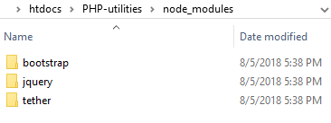
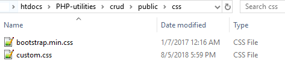
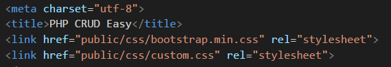

ทำ CRUD ง่ายๆ สไตล์ PHP
- ทำการ install node และ npm ในเครื่องให้เรียบร้อย
- ในโฟลเดอร์โปรเจค สร้างไฟล์ package.json สำหรับนำเข้า lib ต่างๆ
- ข้างในใส่ {}
- เปิด cmd และเข้าไปในโปรเจค
- lib ตัวแรกที่จะนำเข้ามาคือ bootstrap ให้เข้าไปที่ website ของ bootstrap เพื่อรัน npm install ตัวล่าสุด
- รันตัวล่าสุด (ซึ่งตอนนี้คือ bootstrap@4.0.0-alpha.6) npm install bootstrap@4.0.0-alpha.6 --save
- ในไฟล์ package.json ระบบจะเพิ่ม dependencies ของ bootstrap มาให้ ส่วนใน node_modules เพิ่ม jquery ที่เข้ากับ
bootstrap version นั้นเข้ามาให้ด้วย


- copy bootstrap และ jquery จาก node_modules มาใช้ในโปรเจค


- ลำดับการ include ของ css และ js


- สร้างโฟลเดอร์ libs
- ข้างใน libs สร้างไฟล์ขึ้นมา 3 ไฟล์ดังนี้ config.php, pdo.php และ connect.php
- config.php ใส่ข้อมูล database
- pdo.php เขียน class PDO สำหรับเชื่อมต่อข้อมูล